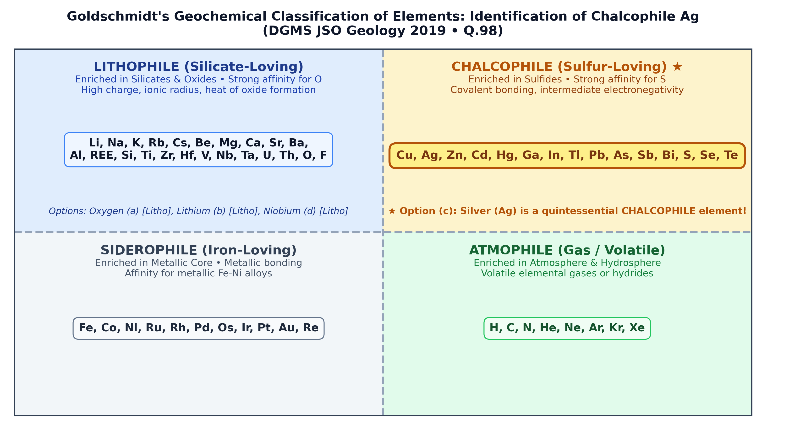
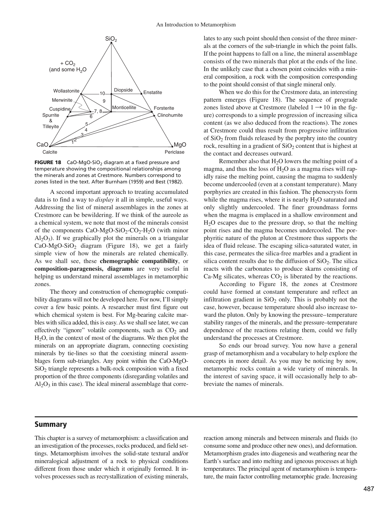
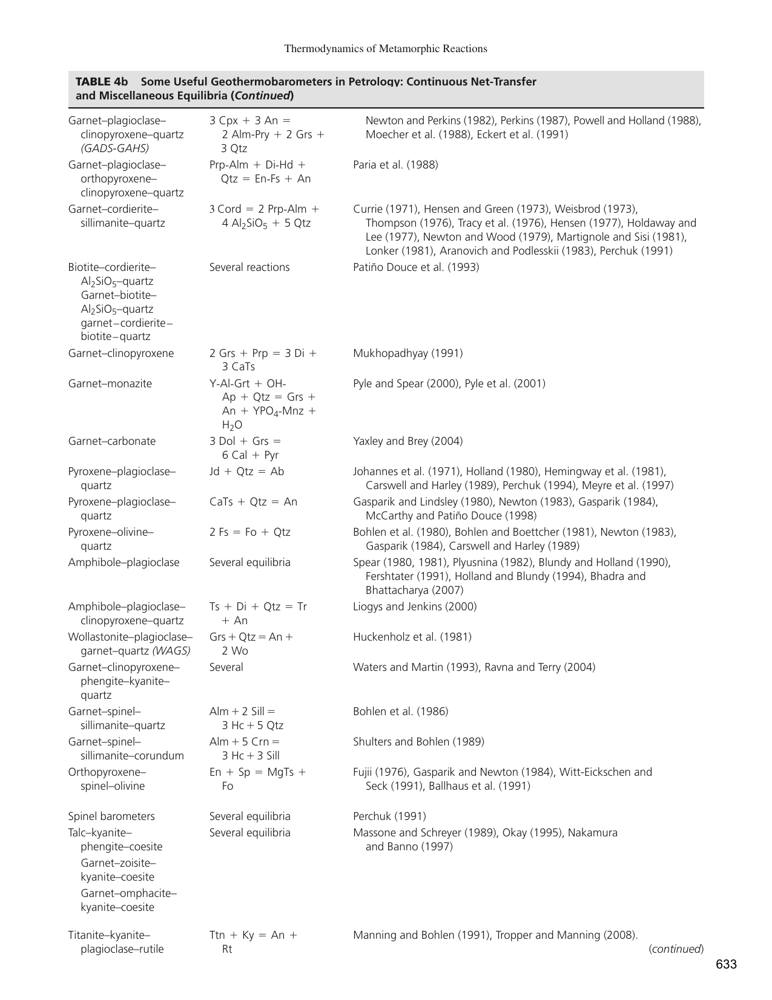
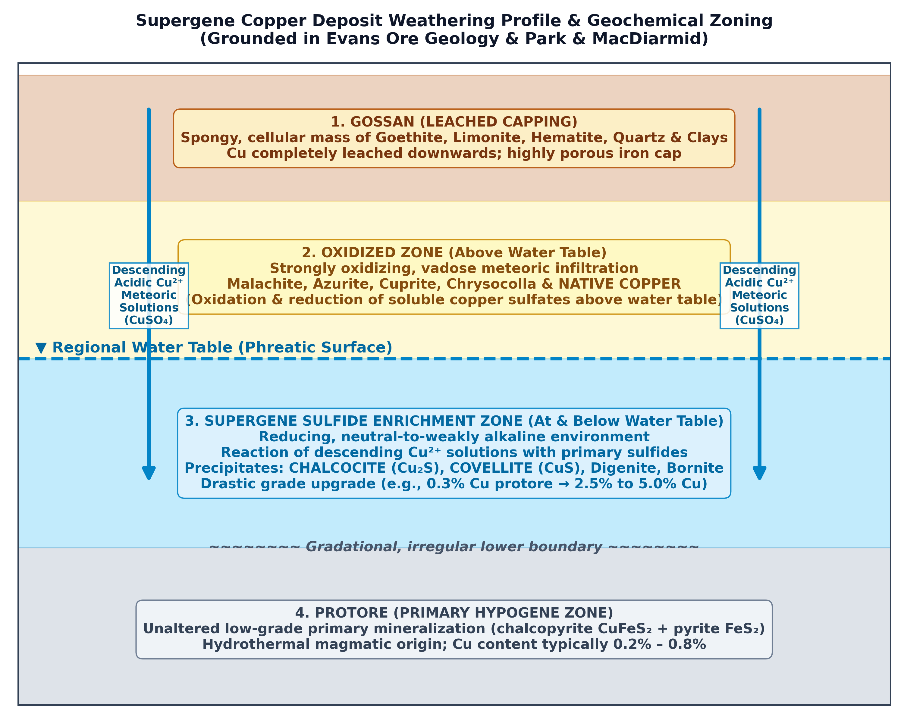
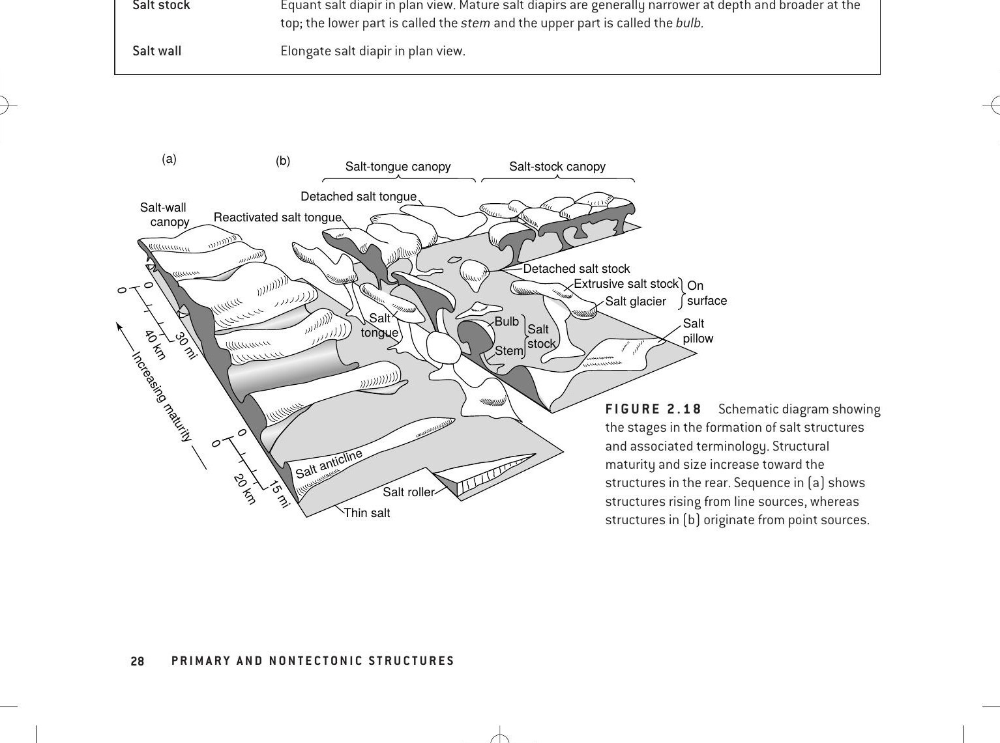
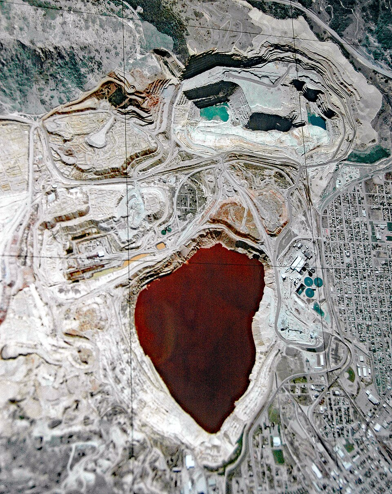
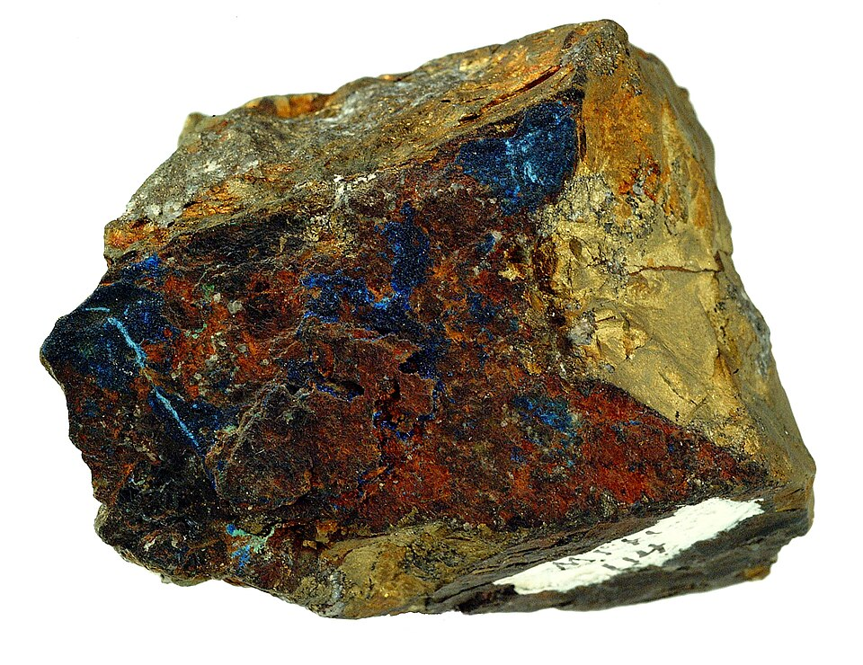
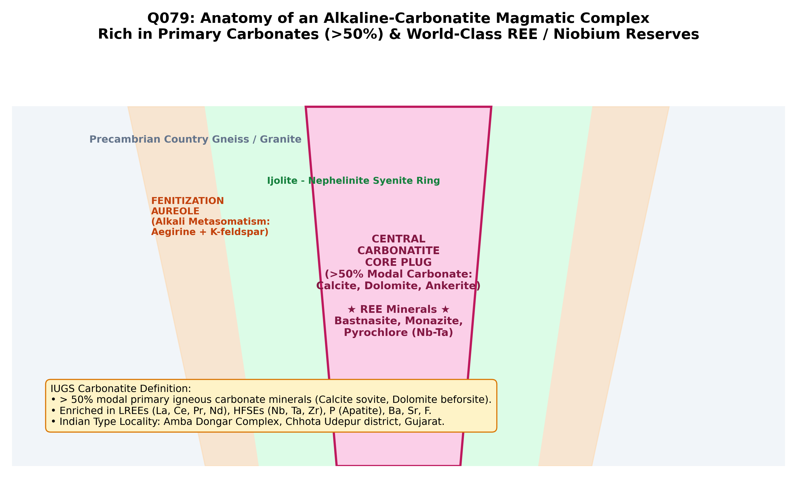

9.1 Terminology

$$5\text{FeS}_2 + 14\text{CuSO}_4 + 12\text{H}_2\text{O} \longrightarrow 7\text{Cu}_2\text{S (Chalcocite)} + 5\text{FeSO}_4 + 12\text{H}_2\text{SO}_4$$
Ore Mineral. A mineral from which one or more metals can be extracted al a profit is known as “ore mineral.” Examples of ore minerals are hemalite,bauxite,galcna, etc. The ores may be high grade or low grade y depending on the percentage of the metal present in it.
Gangue Mineral. The useléss minerals which occur in association with the ore, are called “gangue minerals”. They are commonly discarded in the i treatment of the orc. The common gangue minerals are quartz, calcite, barytes, fluorspar, felspar, and tourmaline.
Ore Deposit, The mixture of ore minerals and gangue forms an “ore deposit”. The ore deposits are generally found cnclosed within the country rocks.
‘Tenor. The term “tenor” describes the metal content of an ore. In order to declare the ore cconomically workable, a deposit must contains # certain percentage of metal in it and the lowest admissible limit of metallic content of an ore is called its “tenor”. The tenor of an ore depends ‘on the price of the metal obtained from it. For costly metals the tenor Is very low, such as for gold it i 0.01% whercas in case af cheap metals like iron, the tenor is i much higher; that is 50% or more.
Syngenetic Ore Depasit. The ore deposits that are formed at the samme, time as the enclosing rock, are called “syngenetic ore deposits”. Sedimentary ore deposits are the examples of syngenetic deposits. 5 7 its tha <d later than Epigenetic Ore Deposits. The ore deposits that are formes the enclosing rock, are called “epigenette ere deposits”. Hydrothermal ore “deposits are the exumples of epigenetic deposits.
9.2. CLASSIFICATION OF ORE DEPOSITS 4 The ore deposits are formed in many different ways. Depending upon y the process that may operate to produce them, the ore tleposits may he classified as follows. q 1. Magmatic ore deposits. 4 2. Sublimation ore deposits. 53 B 3. Pegmatitic ore deposits. JV 4 4. Contact metasomatic ore deposits. 4 5. Hydrothermal ore deposits. On a F (i) Cavity filling deposits. : oss 4 (ii) Replacement deposits. i 6. Scdimentation ore deposits. a U 7. Evaporation ore depasits. Oy 8. Residual and mechanical concentration deposits. Sy 9. Oxidation and supergene enrichment deposits. OY » 10. Metamorphic ore deposits. a8 9.3. MAGMATIC ORF DEPOSITS 5 The maginatic ore deposits arc the magmatic products which crystallize — from magmas. They have close relationship with the intrusive igneous rocks. , The magmatic ore deposits can be classified as follows. z a 1. Early magmatic deposits a (i) Dissemination deposits. Sr q (ii) Segregation deposits. . or é 2. Late magmatic deposits. sas a (i) Residual liquid segregation. an 4 (ii) Residual liquid injgction. Tg F (ii) Immiscible liquid segregation. a s (iv) Immiscible liquid injection. 7 93.1, Early Magmatic Deposits d Early magmatic deposits are formed during the carly stages of Ue magmatic period. In this case the ore minerals crystallize earlicr than Ue rock silicates. ‘The minerals of nickel,chromium and platinum are usually — pal reas magmatic deposits. The early MagMAnC Teposits can he : esl, into two groups : (i) dissemination deposits, and.(ii) segregation ri 0 jae OSITS Dissemination Deposits. When a magma conditions, # granular igneous rock is fect Waa crystals of ore minerals may occur in dissemina: sy formed tion, Here grains of ore are found scattered more | > & ev te dr less evenly throughout the rock mass (Fig. | * 7 + @ * Beit 9.1). Hence the whole rockmass constitutes the | # * aug ore deposit. The dissemination deposits occurin | * 7 + Pare the shape of a dyke, pipe or small stock-like | .y* . # eet mass. An example of dissemination deposit is aes ee. SP es (re-diamond_pipe of panna, madhya pradesh. F189! Desemination Here diamonds occur sparcely scattered in the deposits kimberlite mass.
Segregation Deposits. Early magmatic segregation denosits are formed. as a resull of gravitalive crystallization aa ee ae differentiation. In such cases, the ore <tr ¢ jmncrals Which crystallize carly, get 5 Re ee concen-trated in a particular part of the ae + igneous muss. The ore deposits thus pay as formed are called “segregation oa " in, Fa. +t deposits” (Fig.9.2)..The segregation 5, ~ nee = deposits are generally Jenticular_in aa cae ea shape and of relatively small size. The segregation of chromite in ultrabasic rocks is an example of this type of ore i: "ro
9.3.2 Late Magmatic Deposits
The ore deposits which are formed towards the close of the Magmatic period are called “ late magmatic deposits ”. The late magmatic deposits contain those ore minerals which have crystallized at rather low temperature from a residual magma. The magma which is left uficr crystallization of the early formed rock silicalcs, is called “residual magma”. This magma frequently contains many ore minerals. The late magmatic deposits include most of the magmatic deposits of iron and titanium ores. These deposits are almost always associated with mafic igneous rocks.
The late magmatic deposits have been classified into four groups At) residual liquid segregation (ji) residual liquid injection, (ifi) immiscible liquid segregation and (jv) immiscible liquid injection.
Residual Liquid Segregation. In a magma, perticularly the basic magma which is undergoing differcntiation, the residual fiquid may become + enriched in iron and titanium. This heavy vesidual liquid may segregate and crystallize within Ihe parent igneous mass. Such ore bodies commonly occur in the form of paralle}_bansls ‘and may form valuable ore deposits. An example of this class is the magmatic mugnelite deposit which commonly. occurs as concordant layer within mafic igneous rocks. 1 318 PRINCIPLES OF NE Sree 4 mats ++ Residual Liquid Injection. The iron rich ey ++ residual liquid accumulated as a result of dif- ea, ‘one * ferentiation of mafic magma, may get injected Va + he + a F into the surrounding country rocks (Fig.9.3). The p/ te gp th ee TG ore deposits of magnetite and ilmenile formed (*¥ + + + + = * in this way, are called “ injection ore deposits’. | + + + + * + Such deposits usually occur in the form of veins, Fig. 9.4. Injection depos, dykes or sills.
Immiscible Liquid Segregation. When a mafic magma cools, the sulfide rich immiscible liquid separates out and accumulates at the bottom of © the igneous body. This separation is similar to that of oil and water. The immiscible liquid consists mainly of sulfides of iron,nickel and copper. Upon consolidation it gives rise to the “sulfide segregation depasit ". These deposits occur commonly at the bottom of the differentiated mafic intrusives as disconnected bodics. a Immiscible Liquid Injection. The sulfide rich immiscible liquid which separates out during the differentiation of mafic magma, may get injected — into the enclosing rock. On consolidation it forms the “immiscible liquid injection deposit”. Such deposits are usually irregular or dyke-like in form. 9.4, SUBLIMATION DEPOSITS ¥ Sublimation is a very minor process of formation of ore deposits. Sublimation deposits contain only those minerals which have been volatilized by hicat and subsequently redeposited in the same form at low temperaiure_and pressure. This process involves direct transition from solid To gascous state and vice versa. The sublimation deposits are found associated with volcanoes and fumaroles. Sulfur of this origin has been mined in Japan, 4 ltaly anrMIKTCO7exT CO 93, PEGMATITIC DEPOSITS ; The late residual magma which is left in the last stage of crystallization, commonly contains silica, alkalies, water, carbon dioxide and concentrations of rare elements and metals. Pegmatites are formed when this residual Magina gels injected into the enclosing rocks. Many such pegmatites form Valuable titieral deposits. The economic minerals which commonly occur in pegmatites arc mica, corundum, gemstones and felspars. Deposits of Fae niobiuin, tin,wngsten, molybdenum and uranium are also found vad acs: Pegmatites of economic importance are mostly found Associated with felsic Igneous rocks such as quartz. dioriuc rocks. 9.6. CONTACT METASOMATIC DEPOSITS 4 Pees jae (eu on invade carbonate rocks, such as limemagmatic vapours on th aie pee the contact by the reaction of the in the host racks (Fig.9.4). These reactions take place F ORE DEPOSITS iiss under conditions of high temperature and pres- | SORSSV AW sure. The new minerals What develop may be [Xs Ne SAA x ‘composed of partly or wholly of the constituents \ NYS aN added from the magma, ANG VN All magmas do not give rise to contact |S jnetasomatic deposits. Mostly felsic intrusives of {+7 intermediate composition, such as monzonites Fig. 94. Contact and granodiorites yield ore deposits. The reason —_metasomatic deposit is that thé emanations from such intrusives usually carry constituents of ores which replaces the invatled rocks to form ore deposits.
Contact metasomatic deposits usually carry ores of copper, iron, zinc and more rarely gold, silver and Jead. The characteristic gangue minerals which are found associated with these ore deposits are high temperature silicates, such as garnet, diopside, tremolite, wollastonite, and phlogopite The contact metasomatic deposits are generally discontinuous and ixregular in shape. They are in general of comparatively small sizc. 9.7, HYDROTHERMAL DEPOSITS The epigenetic ore deposits formed by hydrothermal solutions are called “hydrothermat ore deposits”. The orc deposits which are commoniy formed by the hydrothermal process are of gold, silver, copper, lead, zine and mercury.
Hydrothermal Solution. The fluid left during the later stage of crystallization of intrusive magma when the main rockforming minerals have already been precipitated, is culled “residual fluid” Metals originally present in the magrna, concentrate in this fluid. This fluid which is a hot watery solution containing mineralized liquids derived from an intrusive magma, is called “hydrothermal solution”.
The hydrothermal solution move through cracks and openings present in the rocks and deposit their dissolved minerals there. Minerals which have lowest temperatures of crystallization, such as stibnute and cinnabar may migrate very far away while those having higher temperatures of crystallization, such as chalcopyrite, may precipitate close to the parent igneous body.
9.7.1 Classification
On the basic of temperature of deposition, Lindgren has classified the hydrothermal deposits into three groups : () hypothernal deposits, (i) mesothermal deposits, and (ii/) epithermal deposils, Hypothermal Deposits. These are the high temperature deposits which are formed close to the intrusive body. Here the temperature ranges between 300° — 500°C. The chief ore minerals which are commonly found in hypothermal deposits are arsenopyrite, wollramite, mative gold and chaicopyrilc. ; Mesothermal Deposits. These ure the interinediate temperature 4 deposits which are formed at some distance outward from the intrusive igneous mass. Here the temperature ranges hetween 200° - 300°C. The chict ore minerals of methothermal deposits are native gold, bornite, sphalerite, 4 galena and argentite. 4 Epithermal Deposits. Thesc are the low temperature deposits formed j very much away from the intrusive body. Their temperature of formation j ranges between 50°- 200°C, The ore minerals which commonly occur in 7 cpithermal deposits are ruby silver, stibnilc, and cinnabar. On the basis of mode of formation, the hydrothermal deposits have been @ classified into two groups : (i) cavity filling deposits, and (i/) replacement deposits. j Cavity Filling Deposits. These deposits are formed when hydrothermal solutions deposit their dissolved minerals in the various types of openings prescnt in the rocks. In this deposition no replacement is involved. Such a7 deposition takes place by change of temperature and pressure of the hydrothermal solution, Most of the epithermal deposits are cavily filling a type. ig J Replacement Deposits. These deposits are formed due to chernical ea interaction between the hydrothermal sohition and the country rocks. The Bh ore minerals are deposited from a mineral bearing solution in place of the e fi country rocks, the later being dissolved and removed in solution. . a The filling of the rock openings by precipitation and the replacement a of their walls, may occur simultancously. Thus there may be a gradation ; ia between these two types of deposits. Replacement dominates under condi > i tions of high temperature and pressure whereas cavity filling dominate: under conditions of low temperature and pressure. 7 9.8. CAVITY FILLING DEPOSITS ; Cavity filling deposits are formed when hydrothermal solutions deposit their dissolved minerals in the rock openings. ere precipitation of minerals , is chiefly caused by change in the temperature, pressure and chemical 4 character of the mincralizing solutions, The characterstic features of the E cavily filling deposits are as follows.
fie tie ape mineral which Precipitates first lines the walls of nea nee ra Hew inward and point towards the centre. Generally a erent minerals are deposited upon the [irst one. This siney, preset ual the filling is complete. A filling of this type is called ; es ph see A vein crustification is said to he “symmetrical” . a sts Occur on both sides of the fissure, and when a y ORE DEPOSITS a2t unlike layers are present on each side, the crustification is called “assymmetrtcal”.
Comb Structure. If in a mineral BE vein prominent crystals project inward from the walls, it is said to have a “comb structure” (Fig.9.5).
Vugs. When a vein is not filled completely with the mineral matter, Mh. open spaces are left in the centre. Such unfilled spaces are called “vags a (Fig.9.5). Fig. 9.5. Ore vein with comb structure.
9.8.1 Types of Cavity filling Deposits
Depending on the nature of openings,the cavity filling deposits occur ina varicty of shape und size. The common types of cavity filling deposits are: (i) fissure veins, (ii)'shear zone deposits, (iif) stockworks, (iv) saddle reefs, (v) ladder veins, and (v2) cave deposits and gash veins Fissure Veins.A fissure filled with orc is called “fissure vein". Iisa tabular ore body which occupies onc or more fissures within a rock. Fissure vein deposits are the most important of all the cavity filling deposits. They are the chief source of most of the metals like gold, silver, copper. lead, zinc and mercury.
Mos! fissure veins are narrow and their lengths range from a few hundreds of meters to a few kilometers. They gencrally have a steep dip. Ore minerals are never equally distributed throughout the fissure vein. Places where large concentrations occur, are called “ore shoots”. The common types of fissure veins are as follows.
(i) Simple Fissure Veins. A fissure vein which occupies a single fissure whose walls are nearly straight and parallel, is called “simple fissure vein”.
(@ Chambered Veins. Veins whose walls are irregular and brecciated, are called “chambered veins”, Such veins branch and join again thereby enclosing “horses” of the country rock [Fig. 9.6(4)]. ere tas tal 7) yg Wily righ (Pag By ny end (in VS he SU g@tg AMY Agh Mi}: o ‘J rid gh) on yy ¢ son II) efi) Ay Of.
SF) MOG Zy Lf. Me Gary) HY SIT:: Eee oui Dea, SEZOSA-| IVP.
Shear Zone Deposits. The shear zones are the zones of thin and closely > spaced parallel fractures. Here as the openings are minute, the open space deposition is minor, However, the large specific surface of the openings makes the shear zones very susceptible to replacement. Hence many large and Valuable ore deposits are found in the shear zones. :
Stockworks. A “stockwork" is a mass of rock traversed by a network — of small ore bearing veins. Each vein is about one centimeter in width and a few melers in length. The spacing SWF ; a few centimeters to aa few meters. In| * Kid pon 3 i stockworks the whole rock mass in|* > * Bee 38 mined. Stockworks are formed when| * + | ys Lea ee the hydrothermal solutions percolate |* + + Bret ey oy through vertical zones of intense shat- | + + VRAGEN + + tering which occur in certain igneous Fe or Siete intrusions (Fig.9.7), eerie :
Saddle Reefs. During folding openings are formed between rock beds at the crests of anticlines. Mineralization along such openings Ieadsto the development of ore deposits. Because these ore deposils appear like a saddle, they are called “saddle reefs" (Fiz.9.8).
PER ®/ oves Les os cee ———_ — Smt wk —f
1, Replacement is the chemical process of simulancous capillary solution and deposition. By this process new minerals are substituted for carlier minerals and rocks.
2. Replacement occurs through the action of hot vapours or hydrothermal solutians. The new minerals are carried in solution and the replaced substances are carricd away in solution. It is an open circuit not a closed one 3. ‘The replacement takes place molecule by molecule. Consequently the shape, size, structure an/l texture of the rocks are faithfully preserved 4. Almost any rock may be replaced by ore, but the rapidly soluble carbonate racks are the most’susceptible, Certain structural features such as fissures may alsa localize replacement, Closely spaced sheeted fissures and shear zones, because of their large specific surface, give rise to large replacement lodes. 9.9.1, Types of Replacement Deposits The orc deposits formed by replacement can be subdivided into three groups : (i) massive deposits, (ii) replacement loues, and (iif) disseminated deposits.
Massive Deposits, Massive replacement ore deposits commonly occur in limestones, The ore terminates abruptly against the host rock, The massive deposits are characterized by great variations in size and extremely irregular form.
Replacement Lode Deposits. The lode deposits are formed when the replacement is localized along thin beds or fissures. In this case the fissure walls are replaced by the ore, The lode deposits resemble firsure veins in form, however they are wider , RR 4 than fissure veins and their ay walls are wavy and irregular Ay i q Disseminated Replace- SSS ; ment Deposits. These are low SSE” grade ore deposits where SES grains of ore minerals are SESE found scattered throughout the SE Re : host rock. The size of dissemi- L_<— aS nated ore deposits is generally fog large. AY -
9.9.2 Features of Re- F pcalized by fissures
placement The replacement deposits can be identified by the following features.
1. Preservation of original rock structures, such as stratification, ;- bedding, fossils, etc. St 2. Presence of unsup- ———S Ported nuclei of the ———— ——— 7 host rock sur —— OO rounded by the ore ( a oe al supported nuclei are wa z —a the small islands of ipso 12 Reptieeniey ests figst rock Which are: containing nuclei of host found enclosed within the replacement deposits.
3. Presence of mineral psendomorphs, ie. false crystal shapes.
4. Absence of crustification.
5. Extremely irregular outline of the ore body. 9.10, SEDIMENTATION DEPOSITS Sedimentation deposits are the syngenetic ore deposits which are formed at the same time as the enclosing rock. They occur as beds in the ; sedimentary rocks. Some of the important sedimentation deposits are ironore, manganese ore, copper ore, phosphates, limestone, coal, and clays. 3 These deposits are formed by the Process of sedimentation. This process may be summarized as follows 1. During weathering, the materials are released from the source rock. In this Process the valuable mineral constituents are taken into solution. The chicl solvents are carbonated water, organic acids and sulfate solutions, 2. Most of the valuable substances are transported cither in suspension or in solution by means of river water (0 the sea.
3. Inthe sea, the valuable material is deposited mechanically, chemically or biochemically. The chernical precipitation of materials in solution is controlled largely by the pH and Eh of the environment. The pH is responsible for the acidic or alkaline conditions and the Eh for the oxidation-reduction potential.
Example 9.1. [ron is commonly precipitated as carbonate (siderite), hydroxide (gocthite),and oxide (hematite). The ferrous carbonate is precipitated at lower pH and Eh while ferric oxide is formed in the presence of air.
Example 9.2. [n the formation of manganese ore, iron must be separated from it during deposition. This separation is done as follows. ( Precipitation fram Carbonate Solutions. Because mangancse carbonate is more stable in solution than iron carbonate, the manganese carbonate is carried further away and is thus separated.
(ii) Precipitution in Oxidising Environment. The separation of iron and manganese takes place because at any given pH, iron oxides precipitate at lower Eh than manganese oxides. Similarly at a fixed EH, iron oxides precipitate at a lower pH than manganese oxides. 9.10.1, Features of Sedimentation Deposits The sedimentation mineral deposits show many of the characterstics of normal sedimentary rocks.
(i) They commonly show bedding planes, ripple marks and other sedimetary structures.
(i) They normally occur as a bedded sedimentary rock interstratified between racks of sedimentary origin.
(iii) They are often a deposit of greal geographical cxtent. 9,11, EVAPORATION DEPOSITS Many nonmetallic mineral deposits are formed as a result of evaporation — of shallow and isolated badies of saline water, The chicf minerals which ‘accur as evaporation deposits are common salt, gypsum, and other salts of K, Na, Ca, and Mg. The process of evaporation may briefly be summarized as follows.
(@) The main source of the evaporation deposits is sea water.
(ii) When a body of sea water is cutoff during oscillations of land and sea its water evaporate. This leads to the concentration of soluble salts, (iif) When supersaturation of a salt is reached, that salt is precipitated wad thus evane-**lon deposits are formed, j 326°. PRINCIPLES OF ENGINEERING GEOLOGY = (iv) The evaporation deposits are mostly formed in warm arid climates a y : where evaporation proceeds very rapidly. “ 4. y 9.42. RESIDUAL DEPOSITS a Pe Residual ore deposits are formed as a result of weathering of rocks and z ‘ i enclosed mineral deposits. The economic minerals which commonly occur 3 : H as residual deposits are iron, manganese; bauxite, clay, ochre, tin, kyanite, E q During weathering the rocks undergo chemical decay. In this process g the undesirable constituents arc removed in solution leaving behind a con. ; ecutration of valuable mincrais al the site of the original rock, The conditions a q necessary for the formation of residual mineral deposits are as follows. 3 (® The rock undergoing weathering must contain some valuable q minerals, : sf; (ii) The valuable minerals must be resistant to chemical weathering, ; a (iti) The outcrop surface should have low relief so that gravity and : 7 ¢ running Water can not remove insoluble products of weathering. 3 (iv) There stiopld be adequate rain to carry away in solution the saluble 4 products of weathering. Hence residual deposits commonly 4 devetop i tropical or subtropical climate, 9.13. MECHANICAL CONCENTRATION DEPOSITS .
sf ‘The natural separation of heavy minerals from light ones by means of 4 via} moving water, air or gravity,is called “mechanical concentration”. The 4 i mineral deposits formed by this process arc culled “placers”. The minerals i which commonly ocr as placer deposits are diamond, gold, platinum, tinstone, magnetite, chromite, ilmenite and monazilc. The process of # tmechanical concentration may be summarized as follows, q 1 () The ore minerals are released from the rock by weathering and a 4 disintegration. i i i) The disintegrated materials are carried downslope hy water, air, = @ etc. Ultimately this material reaches the stream or sca shore. . (ai) In the moving water or air, the heavier placer minerals sink to the - » i bottom while the lighter material is carried further. Thus the 4 Le i heavier minerals are separated from the lighter ones. ‘ f ¥i (iv) In this way the heavy minerals get concentrated in particular 4 4 Hi localities to form placer deposits. 9 The conditions necessary for the formation of a jt ; = e Placer deposit are : (i) a q ‘There must be a primary source, such as an ore deposita dissemination ead ey aow Bade deposit which supplies ore minerals; (i) It must be . is 4 exposed to weathering on slope from where the disintegrated i a b : be carried away by water,airetc.; (iii) The ea id 4 ; cs vaUrele.; (iit) ore mineral in the deposit must ce : ORE DEPOSITS 327.
be of such chemical composition that it can resist weathering: and (iv) For amineral to be concentrated as a placer deposit, it must have a higher density than the worthless material with which it occurs.
9.13.1 Types of Placer Deposits
The placer deposits have been divided into four groups : (1) eluvial placers, (ii) stream placers, (iif) beach placers, and {1v) eolian placers, Eluvial Placers. The eluvial placer deposits ovcur along the hill stopes. Here the mineral concentration is caused by gravity, When the debris produced due lo weathering of rocks, moves downslope, the heavier particles move more slowly than. lighter ones. In this way heavier minerals get ‘€oncentrated to form an ¢luvial placer deposit.
Stream Placers. These occur at various places along the streain, Here the mineral concentration is caused by running water. The weathered rock PLACER material travels with stream water, The (722272. et Oe concentration of heavier minerals oc- {~ .
curs in those places where the velocity om of water slackens. The places where w stream placers are found, are as folk Pe E lows.
; <= (@ Inpotholes and plunge pools which form at the-base of waterfalls and rapids. 7) (ii) Ta the sand bars which occur —; tou RADE Ont atthe inner. curves of SS Fi meanders (Fig. 9.13(a)]. > eo (iii) Just downstream to the junc- : tion of a tribulary to the main te) d (fv) On the river bed in the A Deer ELEY Ey SSS apap vicinity of a low grade f HG: MULTE deposit [Fig. 9.13(¢)]. LoiLs i = (») In the rifles [Fig..9.13(@)]- Fig, 9.13. Siream placers. (a) In the Streams flowing across verti- inner curves of meanders. (b) cal or steeply inclined beds Downstreanvof a juaction of may; have uneven. floor. tibutary. (°) Tn the vicinity of a low Such a floor formns “riffles". . Stade deposit. (d) In the siffles.
Beach Placers. These deposits occur along sea shores where, mineral, concentration is caused by wave action, Beach :sands of Kerala contain: important deposits of monazite and ilmenite, “ ey Eolian Placers. These occur in arid regions where mineral concentration is caused hy wind action. Eolian placers are found in Australia. 7
9.14 Oxidation and Supergene Enrichment Deposits
If an ore deposit is exposed to the ground surface, it undergoes weather- 4 ing. The surface water oxidizes and dis- 023A SOreAn solves the ore minerals from the avian 4 weathered zone and carries them MEK downward. The dissolved minerals are ‘ ro REACHED i redeposited just below the groundwater as Sage, > table. In this way a low grade primary ee ore deposit may be enriched to form a = oMDieeD 1 valuable ore deposit. Such ore deposits \ ORE are called “supergene enrichment X ni ie Poe deposits” (Fig. 9.14). Three zones have " SA fx mcew an been recognised in the supergene en- ‘] q richment deposits : (i) Zone of oxida- oS a : tion, (f@) Supergene enrichment zone, verse and (iii) Primary zone. VME Vemmany Zone of Oxidation. The oxidized ees part of the ore deposit is called the eVeSr i “zone of oxidation”. This zone extends Fig, 9,14. Oxidatian and supergene E i from the ground surface upto the water enrichment deposits. 4 table. The ore minerals from this part of the ore body are dissolved and removed.
Supergene Enrichment Zone. This zone lies below the water table. In 4 this zone the dissolved ore minerals ure precipitated in the form of secondary sulfides.
Primary Zone. The lower unaffected part of the ore body is called the ’ “primary zone".
9.14.1 Process of Supergene Enrichment
The process of supergene sulfide enrichment involves three stages : (/) ; oxidation and solution in the zone of oxidation, (i) deposition in the zone of oxidation, and (iif) supergene sulfide deposition. q i ; Oxidation and Solution. Most primary sulfide deposits of copper, i silver, lead and zinc contain pyrite (FeS,). The surface water containing dissolved oxygen reacts with pyrite and yields iron sulfate and sulfuric acid, both of which are soluble in water.
The water containing iron sulfate and sulfuric acid i ion j ne 2 in solution is a strong solvent. It attacks the other primary sulfide ore minerals and produces soluble sulfates of their metals. The ore minerals of copper, silver and zine are dissolved in this way.
The solution containing secondary sulfates travels downward to the reducing zone which lies below the water table. Thus the ore minerals are removed from the zone of oxidation.
Deposition in Zone of Oxidation. The cold dilute solution of secondary sulfates moves slowly downward. It may mect some precipitants and may redeposit its metallic content in the zone of oxidation. The ore deposits formed in this way are called “oxidized ore deposits”. The chief ore minerals which occur as oxidized deposits are native metals, carbonates, silicates, and oxides of copper, zine, lead and silver.
Supergene Sulfide Deposition. The solution containing sulfates ot metals in dissolved state may reach the water table. Below the water table its metallic content is precipitated as sulfide. The ore deposit formed in this way is called “ supergene sulfide deposit”.
Below the water lable all the pores of rocks are saturated with water and therefore no air is available for oxidation. This reducing environment favours the precipitation of ore minerals as sulfide. This deposition takes place by the process of replacement where the pre-existing metallic sulfides are replaced. For example, copper sulfide is precipitated from the solution by the replacement of primary sphalerite (ZnS) as follows. CuSO, + ZnS = CuS + ZnSO, The sulfide enrichment starts at the water lable and extends tor some distance below it. The upper surface of the enrichment zone is sharply separated from the oxidized zone whereas its lower surface is highly irregular and there is a gradational transition to the primary ore (Fig. 9.14).
Gossan. A “gossan” is a ferruginous and porous looking residue that forms a superficial cover over ant oxidized sulfide deposit (Fig. 9.14). The limonite formed as a result of oxidation of ironbearing sulfides, imparts red and brown colours to the gossans. = The porous nature of gossans is caused by the removal of the soluble materials, The residual limonite of gossans usually shows a honeycomb structure called “boxwork". Gussans sometimes serve as an indication for the occurrence of useful ore deposits underneath.
9,15. METAMORPHIC DEPOSITS Deposits formed duc to metamorphism may be divided into two groups : () deposits formed duc to metamorphism of pre-existing ore deposits, and (if) deposits originated duc to formation of new minerals during metamorphism of certain rocks. The manganese deposits of Madhya Pradesh and Maharashtra belong to the former group, while the later eroup includes many i *RINCIPLES OF ENGINEERING GEO, J valuable nonmetallic deposits. Examples of nonmetallic mineral depositg asbestos, talc, kyanite, sillimanite and graphite.
t 9.16. CONTROLS OF ORE DEPOSITION ‘ The ore deposits are usually controlled by certain features Of the 7 in which they occur. The factors which control ore localization Tay i grouped as follows. 4 1. Structural controls (i) Orogenic movements. . sa (ii) Igneous intrusions (iii) Faults and shear zones. 3 (iv) Rock openings.
2. Stratigraphic controls. 4 (0) Basin of deposition (it) Unconformities, (til) Bedding planes. r (iv) Impervious sifata. ” 3. Physical and chemical controls F (i) Permeability.
(ti) Brittleness. (itt) Chemical properties.
9.16.1 Structural Control
ios Rae features of rocks are the most important features which finding the ove cog They wre now being used as a useful guide for along the fold mountains fies meas ae ee POslls generally occ rock deformation, dislocations nets ME the sites of crustal movement, bodies Yield mineratiyy nos 24 igneous intrusion. ‘The intrusive igneous les yield muneralizing fluids whi ePosit the Ore minerals there. ‘Tha aeY® "tough the rock openings and during the mountain building pros, Openings in the rocks are produced Igneous Intrusio With intrusive itncoos Bodie a ore deposits are closely associated Produce ore deposits in the nearby mee mineralizing fluids which Faults and Shear 7 A a from depths along alee its mineralizing solutions move upwards with the faults, Many of the py ca on deposits are usually found associated been found along the reieas ea mal and mesothermal ore bodies have is, thrusts and strike slip faults.
ORE DEPOS Ss Shear zones are the zones that contain intensely fractured rocks. The fractures nol only help in producing vein deposits, they also offer large specific surfaces for forming replacement lodes, BT ES : Rock Openings: The various types of openings found in the rocks are joints, fractures, solution cavities, pores, etc. The mincralizing solutions move through these openings and deposit their load there
9.16.2 Stratigraphic Control
Basin of Deposition. The sedimentary mineral deposits such as coal, ; jron ore,mangunese ore, elc. are deposited as beds in sca or lakes. Such basins of deposition control the area of occurrence of these deposits.
Unconformities. The unconformities represent old erosion surfaces. Hence they are the site for the accumulation of residual ore deposits, such as bauxite, and residual iron and manganese ores. The unconformilies may also serve as impermeable barriers and therefore they may localize oil,gas and groundwater.
Bedding Planes. The bedding planes are the planes of weakness in sedimentary rocks. The replacement and contact melasomatic deposits are frequently localized along them. The regional foliation and fracture cleavage in metamorphic racks may also localize ore deposils.
Impervious Strata. Impervious rocks such as shales. serve as barriers to moving mineralizing solutions. Hence many deposits arc localized along shale beds.
9.16.3 Physical and Chemical Control I
The physical and chemical properties of rocks play an important role in controling ore deposition. These controls operate along with the structural features. !
Permeability. The permeability of a rock is ils capacity to transmit i fluids. It is directly related to the porosity of rocks. The openings present in the rocks serve as channelways for the mineralizing solutions. Therefore the permeability of rocks is an important factor in controling the formation of ! many epigenetic mineral deposits. It also controls the formation of many * oxidized and sulfide enrichment deposits.
Brittleness, Brittle rocks have a tendency to crack readily under stress. As aresult they become permeable 10 mineralizing solutions. Hence. mineral deposits are frequently found in brittle rocks. Examples of brite rocks are rhyolite, quartzite and limestone, Chemical Properties. The chemical character of the host rock plays a dominent role in the localization of epigenetic ore deposits. The replacement ore deposits are frequently localized along reactive wall rocks. The facts which support this statement, are as follows. ‘ (7) Carbonate rocks, such as limestones and dolomites are more congenial to ore deposition than other rocks.
(4) Vein deposits are frequently found against dolerite and not agai st granite. ; (iti) In general, highly silicic rocks are not as favourable localizers pf ore as less silicic and ultrabasic igneous rocks. 3 (iv) The highly aluminous rocks such as shales are also not favourable for deposition of ores. J Coal is the world's leading mineral fuel. lt is burned to produce heal which is used to generate electric power. The coke which is made by heating coal to a very high tcimperature in the absence of air, is uscd in the metal lurgical industry. “a ‘The term “coat” covers a wide variety of materials, ranging from lignite at one hand to anthracite on the other. It may be defined as a solid stratified rock composed imainly of carhonised plants, 4
9.17.1 Ranks of Caal -
The process of conversion of vegetable matter to coal involves loss of oxygen and hydrogen, and concentration of carbon. The chief stages of coal formation are ; (i) peat, (#7) lignite, (it) bituminous coal, and (fv) anthracite Peat is not a coal though it is fuel. The “Rank” of a coal is its Position in —% of oxveey —»> SEMI- BITUMINOUS a ea Ce 4 ANTHRACITE 4 7 VAAN a 180 oF 30 as Bo aS 7a
9.18 Classification of Coal
my teal of rank and quality, the coals are classified into four main aie chal (4) bituminous coal, (iii) anthracite, and (iv) cannel coal. 4 q € lignite and graphite below anthracite.
one DEPOSITS Feat. Peat is not considered as coal = eae coal formation, Peat ig eee et iS a fuel. Mt represents th first Stage E cut is. a brown porous mass ease fosed vegetable rnaterial. It contains about 85% moisture, HOdE set Thatter, and 4.6% carbon. The dried peat burns re ert 10.4% volatile fhaune. Its calorific value is very low. ily with the long smoky Lignite.Lignite is also called “brow, on 7 brown. It represents the second stage aoa pana often dark composed of finely divided plant tissues, It contains about peata ena Fecrase of high water content, it shrinks, eracks and ofiea distneens when dried in air. The lignite bums freely with a long smok eens low calorific value (11000—12500 B.T.U). y fleinesaad tins dense coal of black colour. It | ¥ 7? ory shows banded structure in | a5 it act which dull and bright bands | * ee allemate. The bituminous coal & "| 7.
beaks parallel to bands but ¥ gS Lgtlztt! a the presence of vertical joints | Eto "i514, +fs makes it to give cubical orrec- | 3°, Edin AG.
tangular blocks. lis moisture | $ © ]-24!0'T's content is low, volatile matter | & ° 7-5)008 0 oa ae ! medium and fixed carbon meee 7+) high. It burns easily with a SS smoky yellow flame, Its& © (it 2 124 calorific value ranges between # ihe “ee ranks of bituminous coals & 39 aie 3 have the maximum heating | Pa power of all coals (Fig.9.16.). “pip. 9.16. Moisture. volatiles. carbon and heat Avtiewcita ilave bard values of different types of col coal with an iron-black colour and submetallic lustre. It does not soil the fingers and commonly breaks with a conchoidal fracture. The anthracite contains about 92—94% carbon and 3—8% volatile matter. It is difficult to ignite but bums with a short blue flame and gives little smoke. Ils calorific value ranges between 15000 to 15600 B.T.U.
Cannel Coal. Cannel coal is » special variety of bituminous coal which 1 is very fine grained and is of uniform texture. It has no banded structure like ordinary bituminous coal. Cannel coal is black in colour and has dull lustre.
It does not soil fingers. It burns easily with a long candle like flame. It is made up of wind blown spores and pollen. It is commonly found associated with senms of bituminous coal as Ienticles ar bands upto about half meter thik. Cannel coal is essentially a drift deposit laid down in shallow lakes. 9.19, BANDED CONSTITUENTS OF COAL 4 In banded coals four separate kinds of coal constilucnts have been recognised: (i) vitrain, (ii) elarain, (ji) durain, and (iv) fusain. 7 Vitrain. Vitrain forms thin bright glassy bands of coal which are up to half centimeter thick. It is very brittle and breaks with 2 conchoidal fracture, The woody structure is not visible with naked eye. Vilrain is a cokin constituent of coal.
Clarain. Clarain forms thin bands in coal. It is characterized by bright colour and silky lustre. It is composed largely of attritus. Altritus is the finely ; divided plant residue which is composed of the more resistant plant products, — Clarain is a coking constituent of coal. P Durain. The dull earthy looking bands of coal are called durain. Durain is hard and compact, and has granular texture. Its colour is lead-gray. It consists of cuticles, spores, etc. Durain is the noncoking constituent of coal, Fusain. Fusain is also called “mineral charcoal”. It is a soft, powdery, pitch black substance which soils the fingers. It is a minor constituent of coal which occurs in small patches and in the body of durain and clarain. Fusain is high in ash and is a noncoking constituent. | i 9.20, CHEMICAL PROPERTIES OF COAL 2 The commercial value of a coal depends on its chemical characters. The main constituents which are determined in the proximate analysis of coal 3 are: (/) moisture content, (i?) volatile matter, (it) fixed carbon, (fv) fuel ratio, (¥) ash content, (v7) sulfur content and (vii) calorific value. j Moisture Content. The moisture content of a coal can be driven up at 100°C. It is highest in peat and lignites, and lowest in anthracite. j Volatile Matter. The volatile matter is that which busns in the form of a gas, It consists of combustible gases such as hydrogen, carbon monoxide, methane and other hydrocarbons. These gaseous products are driven off from coal when it is heated in the absence of air to about 900°C, The residue left after driving out all the volatile matter is called “coke”. The coke consists of fixed carbon and ash.
The percentage of volatiles in coal varies within wide limits and directly affects the coking quality. Coals with volatile matter less than 18% or more i than 40% are nat good coking coals. Depending on the quality of coke produced from coal through carbonization, coking coals are subdivided into the following groups. q (i) Primary Coking Coal. Coal with volatile content between 22% 4 t and 33% on unit coal basis. 4 (i) Medium Coking Coal, Coal with volatile content between 22% r & and 25% on unit coal basis.
pePosiTs on i Cokii = Git) Semi Coking Coal. Coal with volatil 22%, or 38% and 46% on unit coal rot ia and Fixed Carbon. When the volatiles and ash are re ' 2 moved fi fixed carbon is left. It burns with difficulty and ven facia’ cote fittfacite, the fixed carbon is about 96% and in lignite iti abou at.
Fuel Ratio. Coals contain carbom in two forms: () a fixed carbon, and (ii as volatile matter. The ratio of these two is called “fuel ratio”. Fuel ratio = Fixed carbon Volatile matter Naturally, the fuel ratio will be the lowest in lignite and highest in anthracite. It is the main feature which determines the rank of coal. The rank of a coal praduced is largely determined by the pressure-to which it bas been ' subjected and the time for which it had remained under such conditions. ‘Ash Content. Ash is the noncumbustible mineral matter which is lett afier burning of coal. The main constituents of ash are silt, clay,silicairon oxides and other mineral substances. Too much ash may put a bigh rank coal in a law grade. High percentage ‘of iron in the ash produces clinkers.
Sulfur Content. Sulfer is an objectionable impurity of coal. It is commonly present in most couls in the form of pyrite and marcasile. It helps to i produce clinkers in the furnace and yields corrosive sulfurous fumes on ' burning. More than 1.5% sulfur excludes coal for making gas or coke.
Calorific Value. The calorific value of a coal is the amount of heat that the unit weight of coal would produce on burning. It may be stated either in British Thermal Units ( B.T.U,), or in calorics per kilogram. The calorific vaiue of lignite is about 7500 B.T.U. and that of Bituminous coal is over * 9.21. ORIGIN OF COAL Coals are sedimentary rocks formed by accumulation of plant materials in swamps. Hence the source material of coal is the vegetation malter. ‘The formation of a coal deposit requires & large. accumulation of vegetation : matter, This implies large vegetation growth which is possible only in * subtropical climate with heavy rainfall well distributed throughout the year: There are two theories to explain the mode of accumulation of plant materials to give rise to coal seams - (@ the in-situ theory, and (ii) the drift theory.
9.21.1 In-situ Theory
The in-situ theory suggests that the vegetation matter had accumulated at the place of growth itself in the swamps. This means: that the forests grew at the same place where we now find coal seams, The in-situ theory may briefly be summarized as fallows.
(i) The vegetable matter was accumulated in the coal forest itself, (id) As the land was sinking slowly, the accumulated plant material — was kept saturated with water: and therefore it was not decomposed and desuoyed.
(iii) In the course of time,the rate of sinking of land was inereased and the coal forest was submerged under water. This resulted in the geological burial of the vegetable matter below sand and nud — layers. F (iv) Then uplifting took place and the land emerged out of water. The coal forests came into existence again and the above said cycle of coal formation was repeated. In this way alternation of strata and — coal scams were formed. 4 Evidences. The evidences in support of in-situ theory are as follows.
1. A huge amount of plant material is accumulating in-situ in the swamps that exist today. 2, In coal scams, the stems of fossil trees are found standing erect KE . with their roots protruding into the underclays.
3, The underclays which are found beneath the cual seams are supposed to represent the original soils on which the vegetation grew. 4, The coal seams contain coal which is relatively pure and free from shale bunds. This suggests that the plant material was not transported along with seditnents. 4 5. The uniformity in thickness and composition of coal seams over wide arcas suggests that the deposition of the plant material took place in still waters.
9.21.2 Drift Theory u
This theory suggests that the plant material was transported by stream — action from their place of growth and deposited at suitable places in lakes or sea just like other sediments. te The coal seams of India are of drift origin. The drift theory may briefly — be summarized as follows. ‘ (i) The plant material from the coal forest was transported by walter — and deposited in lakes or sea just like other sediments.
(ii) During transportation the various materials were sorted out aS — usual, in accordance with their specific gravities. q (iii) The pure coal seam was formed in places to which only the lightest material ( plant material ) had access. s (tv) A stream with shale bands was formed in places where a lem: — Porary change in the water currents and hence the nature of sediment occured. 4 ORE DEPOSITS 7 337 q (v) Rapid and frequent oscillatory carthmovenents had given rise to several coal seams one above the other separated by sediments Evidences, The evidences in favour of the drift theory are as follows. F 1. The rocks associated with coal seams are distinctly sedimentary The coal scam itself behaves like a sedimentary bed and they are observed to branch out 2. In some cases the underclays which represent the soil at the roat, a are not found below the coal seams.
3. The fossil trees are more usually found lying at augles other than a the vertical. 9.22, FORMATION OF COAL The Plant materials were accumulated in swamps, broad deltas, coastal : plain areas and interior basins. The climatic conditions that favoured large 1 accumulation of plant material were mild temperate to subtropical. The transformation of plant material into coal consists in the progressive enrichment of carbon content.
Preservation. The land sank slowly with the accumulation of the plant matcrial, Thus the plant material was kept saturated with water. The water or the reducing environment protected the plant material from oxidation and therefore it was not decomposed and destroyed.
Biochemical Change. When plant material falls into water, the decay starts. But it stops soon as the reducing environment and the lack of oxygen prevents further decay. In this process the less resistant parts of the plants such as cellulose and starches are decomposed by the becterial action and the resistant parts such as wax, resin, and cutin along with woody fragments sink to the bottom of the swamp. Thus the partly decomposed plant debris q accunmulates and it gradually turns into “peur”.
Carbonization and Metamorphism. With the passage of time peat 4 changes slowly into anthracite. In this process mainly chemical changes take place. These changes are brought about by the increase in the pressure and temperature which is caused due to decp burial. Form peal to anthracite the amount of oxygen goes on decreasing and the amount af fixed carbon goes Hl on increasing.
The change in the rank of coal is largely a result of pressure and time, The older the coal, the greater the depth of burial. Thus with the passage of t time, there is increase in the pressure which accelerates metamorphism and : tums peat into lignite, bituminous coal or anthracite. ‘ 9.23. OCCURRENCE OF COAL j About 98% of the coal produced in India comes from the rockformations o of Permo-Carboniferous age, that is Lower Gondwana phasis while rst is obtained from the Tertiary rocks. The coal found in the Lower Gondwana: ~ = rocks are of bituminous type whereas those found in the tertiary rocks are tuminous coals, Ty, Most of the Gondwana coals are noncoking bi he coking coals are found only in Jharia, Girdih and Bokaro coal fields, The j j reserves of all types of coal occurring within a depth of 600 meters are estimated at 120,000 million tonnes. The reserves of coking coals are abou — 20,000 million tonnes. The reserves of lignite deposits are estimated lobe about 3500 million tonnes. The deposits of lignite occur mainly in the tertiary rocks of Kashmir valley, Assam, Madras(Neyveli) and Rajasthan(Palana). E 9.23.1.Lower Gondwana Coal Fields .
The Lower Gondwana coal fields of India are situated chiefly in Tiver valleys. E 1, Damodar Valley Region. Coal ficlds of West Bengal and Bihar, 4 (i) West Bengal. Raniganj coal fields.
(i) Bihar. Jharia, Girdih, Bokaro, Karanpura, and Daltonganj ly coal fields. :
2. Son-Mahunadi Valley Region. Coal fields of Madhya Pradesh 7 and Orissa. () Madhya Pradesh. Umaria, Singrauli, Korba, Chirmiri, Sohagpur, Bisrampur, Mohpani and Pench- Kanhan valley coal fields.
(ti) Orissa. Talchir coal fields. 4 3. Wardha-Godavari Valley Region. Coal fields of Andhra Pradesh and Maharashra. (0 Andhra Pradesh. Singareni coal fields, (i) Maharashtra, Wardha valley coal fields.
9.24 Petrolium
“Petroleum™ is the general term used for all the natural hydrocarbons found in rocks. It nat only includes the liquid hydrocarbons but gascous and solid hydrocarbons also. However in common usage, the terms “petroliun” Fefers only to the liquid vil. Gaseous varieties are called “natural gas” and highly viscous to solid varieties are called “bitumen”, ; bons. Ae Petolium is a complex mixture of hundreds of ditTerem hydrocarus. The hydrocarbons fall into several Natural series of which parafin : Series is the most familiar.
9.24.1 Origin of Petroleum
It is now Universally believed that i Lo of F Organic origin. They originate from Sowa lium and natural gas are Scomposition of lower forms of marine organisms such as foraminilers, diatoms, algae, ostracods etc. The process of formation of petroleum may be summarized as follows.
(i) In coastal waters, a Iarge number of marine organisms thrive Hence in offshore sedimentary basins huge amount of organic matter is deposited along with muddy sediments. Because in the hottom of stagnant water, there is deficiency of oxygen, the organic matter is protected from oxidation. Under such conditions anaerobic bacteria extract oxygen from the organic matter and transform it inte fatty and waxy substances.
(ji) During the millions of years of deep burial, the organic matter is converted into oil and gas by the slow chemical reactions, The exact process by which this transformation takes place, is not known, but it is believed that becteria, pressure, moderate temperatures, and great lengths of time play an important part. 9,24.2. Migration of Petroleum The fine grained muddy sediments in which petroleum originates are called “source rocks". The source rocks of petroleum are generally shales, sills, and limestones. The petroleum migrates from the source rock into adjacent porous and permeable rocks and accumulates there to form a pool. Such permeable rocks ure called “reservoir rocks”. The common reservoir rocks are sandstones, conglomerates, porous limestones, fractured shales, and jointed igneous and metamorphic rocks. The causes for the migration of petroleum arc : (i) compaction of the source rack, (ii) bouyancy effect, (ii?) capillary effect, and (iv) water flushing. In an vil pool, the oil Moats on the top of water and above the oil there is usually a lens of natural gas (Fig. 9.25. OIL. TRAPS The oil migrates outward and upward from the source rock and passes into the porous reservoir rock. The migration of oi! continues until it meets a suitable structure where its lateral as well as upward movement is checked. At such a place. the oil accumulates to from an oil pool. Such places arc called “oil wraps’. The conditions necessary for the formation of an oil wap are as follows.
(i) The porous reservoir rocks must have a favourable structure such as an anticlinal fold or dome, to toll oil.
(ii) There must be an impervious cap rock to check the upward migration of oil. The common cap rocks are shale, clays, salt, gypsum, and dense limestone.
(iii) The structural deformation of rocks must not be very severe. Intensely fractured rocks may render traps ineffective by causing leakage. ‘
9.25.1 Types of Oil Traps 3
The oil traps are classified into two groups : (1) Structural traps, ang (ii) Suratigraphic raps. 3 Structural Traps. The structural oil traps are formed aS a result of folding, faulting and igneous intrusions. The description of some of the 3 important structural wraps are as follows. . die .
(f) Anticlines and a Domes. The SS anticlines and eames US SS domes are the Lie RN | ao Sy most important (4. S y because they NS form oil traps hye SS 7 [XS in practically Sar WATER fields of ihe fs ti vorld. Here the Fig. 9.17. (a) Oil trap in an anticline, (6) Oil trap j we secre ine along a fault.
oil and gas migrate up the limbs and collect at the crest below a cap rock IFig. 4 (ii) Faults. When a fault affects inclined strata, a reservoir rock may be blocked off by an impervious shale thereby creating an oil rap (itt) Salt Domes. Where salt domes intrude into the sedimentary rocks, ; good oil waps are formed. Here the oil accumulates near the upturned edges of the reservoir rock which are sealed by the salt —SSSSSS=S=>=>= q tusions. The = er 2 ‘oa volcanic necks Eze SALT, iS oy and dykes may Paty ei IZ, turned edges of the reservoir (ay cB) rock to form oil Fig. 9.18. (a) Oil {rap near a sali dome, |g traps. (6) Oil trap along an unconformity. q j 7 Stratigraphic Traps. The Stratigraphic oil "aps are formed as a result 2 ce diat and eee changes in the permeability of the reservoir rocks. bis ae ee caused by Variations in the conditions during the deposi- q j rocks. Some of the important Stratigraphic oil traps are as follows.
(i) Unconformilics in the rock sequence often give rise to oil traps (ii) The — shales — which are the [<5 source rock of FZars® SOON petroleum may fy cot CD contain lenses KS NNN The oil may ac- <s SAAS cumulate in tay 8) these sandstone .
lenses [Fig Fig. 9.19. (a) Oil wap ina sandsione Jens. 9.19 (a)] * () Oil trap in a sandstone which is wedging out (iii) A porous sandstone may wedge out thereby creating an oil tap
9.26 Petrolium Deposits
In India, resrvoirs of petroleum and natural gas are found in the belts of Teniary rocks of Assam, Gujrat, Offshore region of Bombay High, and in the Cauveri and Godavari deltatic areas.
9.26.1 Oil Fields of Assam
The chief oil fields of Assam are : (i) Digboi, (ii) Nahorkatiya, (ii) Moran, (iv) Rudrasagar, and (v) Lakwa.
Digboi Oil Field. This oil ficld is situated in the Lakhimpur district of Assam. It is 13 km. long and about one kilometer wide. |t lies on a tighlly folded anticline. The steeper flank of this anticline has been cut by the Naga thrust in the northwest. The Oil bearing formation is the Tipam sandstones of Miocene age. The source rocks in this case arc probably Barails. In the Digboi oil field, there are several oil sands and about 400 producing wells of which only 30 are good producer.
Nahorkatiya Oil Field. This oil field is situated in the Brahimputra valley of upper Assam. It lies about 40 km. southwest of Dighoi. The oil deposits occur in an anticlinal structure. There are about 5 oil bearing sands all lying within the upper part of the Barail sandstones of Oligocene age. In the overlying Tipams only gas is found. This oil field is cut into a number of blocks by faults.
Moran Oil Field. This oil field lies about 4] km. WSW of Nahorkatia. Here the oil bearing formation are the Barails of Oligocene age. A major fault divides this field inte two halves.
Rudrasagar Oil Field. This oil field lies about 40 km. southwest of Moran. Here deposits of oil are found in a gentle dome which is cat by several faults. The oil bearing formations are the Barails of Oligocene age.
Lakwa Oil Field. This oil field is situated about 20 kin. SSW of Moran, Here the oil pools are found in the anticlinal structure which is cut by a number of faults. The oil bearing horizons occur both in the Tipams of Miocene age and Barails of Oligocene age.
9.26.2 Oil Fields of Gujrat
The important oi! and gas fields of Gujrat are : (/) Ankleshwar oil field, (ii) Cambhay gas field, (ii) Kalol oil field and (iv) Nawagam oil ficld, Ankleshwar Oil Field. This is the most important ail field of Gujrat, It is situated to the south of Narmada river near Broach. The oil Pools occur in the anticlinal structure. The oil bearing formations are sands of Eocene age. The oil field is about 20 kin. long and its maximum width is about 4km.
Cambay Gas Field. The Cambay gas field is situated about 9 kan. NNW of Cambay town. Huge gas deposits are found in a north-south trending anticline which is faulted on both flanks. The oil and gas bearing sands 4 which are about 150 meters thick, occur in the formations of Oligocene age. fi Kalol Oil Field. The Kalol oil field is situated about 25 km. north of ‘ Ahmeuahad. The deposits of vil are found in an elongated dome tending in the NNW-SSE direction. This dome is cut by a longitudinal fault. Here the oil pools occur in the rock formations of Eocene age.
Nawagam Oil Field. This oil field is situated about 24 km. south of Ahmedabad. The oi! pools occur in an anticlinal suucture in the Eocene formation. :
9.26.3 Bombay High ;
A huge deposits of oil has been found on the West coast of India, in the ; offshore structure, called “Bombay High". The Bombay High lies in the Arabian sea, about 160 km., NW of Bombay. This has proved to be the ; Tichest deposit in the country.
The Bombay High structure covers an arca of about 2500 square kilometers. Here the ail bearing rocks are the limestones of Miocene age. The estimated reserves of Petroleum in this structure are of the order of 4 billion tonnes, / 9.26.4. Other Areas ; In addition to the above mentioned gil deposits, there are Possibilities ol getting oil und pas in the deltas and alluvial troughs of Indus, Ganges, Brahiuputra, Cauvery and Godavari. Besides these, other promising areas are offshore region of Tamil Nadu and Andhra Pradesh, and states of Tripura and West Bengal, . nee Lae _ Lapras aoe Its main use is for currency. It is stored : sate un Value the paper currency. Large juantity of gold is also required for the manufacture of jewelry. TRSaree cianlleyol g q ‘ORE DEPOSITS 343 Mineralogy. The chief mineral of gold is “native gold”. In nature, native gold is generally found rmixed with some silver. It is usually associated with some melallic sulfides, such as pyrrhotite and iron-pyrite.
9.27.1 Types of Deposits
Hydrothermal Deposits. The gold deposits are generally of high temperature hypothermal origin. The ore occurs as lodes, veins or gold bearing quartz recfs in igneous, sedimentary or metamorphic rocks.
Placer Deposits. The gold also occurs as placer deposits in stream beds or on sea shores.
9.27.2 Origin
In India economic deposits oF gold are found only in “Kolar gold field” and “Hutti gold fief" of Kamataka. Here gold occurs as gold bearing quartz veins in hornblende-schists, greenstones and amphibolites of Dharwar system, These gold deposits arc helicved to be of high temperature hypothermal origin, The mineralization is generally controlled by shear zones and [aults which strike roughly in the N-S direction. ‘
9.27.3 Distribution
Practically all the gold produced in India is obtained from the Kolar gold field and the Hulti gold field in Karnataka.
Kolar Gold Field. The Kolar gold field is about 15 kin. long and 3 kin, wide. It is situated in the central part of the “Kolar-schist belt”, The Kolarschist belt forms the easternmost part of the Dharwar rocks of South India Tt extends in the NNW-SSE direction for about 80 km. In the Kolar gold field, the country rocks are mainly dark horublendeschists. They are folded in the form of a major syncline with a nunber of cross folds. The pold occurs as gold bearing quartz veins which traverse the country rocks. The gold is mostly found in the bluish grey quartz of vitreous lustre. The native gold is associated with some metallic sulfides such as pyrrhotite and pyrite.
The gold bearing lodes vecur mainly at the contacts of massive amphibolites with the schistose amphibolites. Along these contacts, the mincralization is localized in the zones of shearing, faults, cross folds, and drag folds.
In the Kolar gold field, there are about 26 gold bearing quartz lodes. Of these only five lodes are of economic importance. These lodes strike in the > N-S dircction and dip tawards the west. The lode which has been worked most is the “Champion lode”. This is one of the biggest lnde which vary in thickness [rom a mere stringer to as much as 12.2 meters. The important mines of the Kolar gold field are Nundydroog, Champion reef and Mysure, The deepest mine is Champion mine which is about 3350 meters decp. 344 PRINCIPLES OF ENGINEERING GECLOGy the Kolar gold field, the tenor of the ore is about 7.42 gram/tonne. The total reserves of the gold ore are about 10.7 million tonnes.
Hutti Gold Field. This field is situated in the Raichur district of Kar. 4 nataka. Here the gold mining belt is about 3700 meters long and 1220 meters wide. The country rocks are mainly greenstones and chlorite-schists. These » rocks are folded and the gold lodes are localized along shear zones. There wre six important gold bearing quartz reefs, The native gold is associated with arsenopyrite, chalcopyrite, pyrrhotite and pyrite. The total reserves of gold ore in the Hutti gold field are about | 3 million tonnes. The gold content a H of the ore is about 4.8 to 7.5 gin/tonne.
9.28 IRON-ORE 3 ‘The iron ore is the second Jargest mineral wealth of India, the coal being ; on the top. The possible reserves of high grade iron ore are about 17,630. million tonnes of hematite and 1610 inillion tonnes of magnetite, j Tron is the backbone of modem civilization. Iron ore is chiefly used in 4 the iron and steel industry. Iron is used for making machine, automobiles, F y trains, ships etc.
Mineralogy. The chief ore mineral of iron is hematite (Fe,0,). The other minerals of minor importance are magnetite (Fe,O,), siderite (FeCO,) y and limonite [FeQ(OH).nH,O]. q
9.28.1 Types of Deposits : :
Magmetic Deposits. Deposits of magnetite and titaniferous magnetite may occur as magmatic deposits in some basic igneous rocks. 4 Contact Metasomatic Deposits. The magnetite may occur as contact metasomatic deposits is some limestones. q Replacement Deposits. Deposits of both magnetite and hematite may occur as replacement deposits in limestones.
Sedimentary Deposits. Deposits of hematite, limonite and siderite may occur as beds in sedimentary rocks. 7 Residual Deposits. Deposits of high grade hematite, magnetite and i imonile may also oecur as residual deposits. 7
9.28.2 Origin
Almost all the major Indian iron ore deposits are of sedimentary and beste origin. They occur in the rocks of the Iron-Ore series (Archacan) and yale equivalents. They are closely associated with the banded-hematitsLartzites and are derived from them, cate banded mati -quarztes are of sedimentary origin. This rock by leaching and the et: Subsequently the silica ofthis rock istemoved : oa depealie, Thee poo iron ore is lelt behind to form residual iron q Posils occur in beds which are up ta 40 meters thick. The iron ores consist of massive, laminated and powdery hematite containing 60-69% iron.
9.28.3 Distribution
Ribar and Orissa. The iron ore deposits occur in Singhbhum district of Bibar, and in Keonjhar, Sundargarh and Mayurbhanj districts of Orissa In these areas the iron-ores are associated with the banded-hematitequartzites and banded-hematite-jasper. The iron contents of the hematite ranges from 55-69%. The total reserve is about 5700 million tonnes.
Madhya Pradesh nnd Maharashtra. Large deposits of iron ore occur jn Buster and Durg districts of M.P. and in Ratnagiri and Chanda districts of Maharashtra. The total reserves of iron ore in this zone is about 3000 million tonnes.
In MP. the important deposits are in Dhalli Rajhara area of Durg and Bailadila arca of Baster. Of these, the deposits of Bailadia are of special importance. These deposits are one of the most extensive and richest deposits in the world. The hematite of Bailadila contains 65-68% iron. These deposits are mostly situated on high hills. The belt of iron ore extends over a length of 35 km and a width of 9 km. The trend of this belt is N- S The ores are mainly massive and laminated hematite which change to blue dust at depth. The thickness af the ore deposits ranges between 305 to 610 meters.
Goa. In Goa region the iron ore deposits are closely associated with pink phyllitic horizon in rocks belonging to the Archacan system, The ore deposits occur in a belt 95 km long and 2 km wide. The iron ore deposits occupy crests and slopes of hills. At the surface the ore is generally hard and lumpy but in depth it is soft and powdery consisting mainly of the blue dust. The iron content of the ore varies from 59-62%. The toual reserves of iron ore in this area are about 397 million tonnes.
Karnataka. The iron ore deposits of commercial importance are found in Bellary, Bijapur, North Kanara, Chitradurga and Tumkur districts. The lotal reserves of iron ore in this area are about 1450 millions tonnes: ‘Tamil Nadu. Deposits of magnetite are found in Tiruchirapalli and Salem districts, The total reserves of magnetite are about 447.7 million tonnes.
9.29 Manganese Ore
Of all the metals used in ste) alloys, manganese is the most important. Manganese is mainly used in making high manganese stecls and carbon steels, The manganese steel is used where hardness and toughness are desired, e.g. in the manufacture of armor plate, car wheels, safes, crushers, machine tools etc. < Mineralogy. The principal orc minerals of manganese are pyrolusite (MaO,), manganite (Mn,0;.H,0), psilomelane (MnO.MnO,.2H.0), 346 PRINCIFLES OF ENGINEERING GEOLOGY braunite (Mn,O,.MuSiO,), and wad. Wad is the massive earthy form of manganese oxide .
9.29.1 Type of Deposits j
Syngenetic Ganditic Deposits. These deposits of manganese ore are found in M.-P. - Maharashua zone. They are associated with rocks of Sausor series (Archaeam) including gondites. A “gondite” is a spessartite - quartz, rock which is formed as a result of metamorphism of manganilerous sediment.
Syngenetic Reef Deposits. These deposits are found in Orissa- Andhra Pradesh zone. They are associated with kodurile rocks. A “kodurite™ is a metamorphic rock which normally consists of quartz, orthoclase, garnet and Mmanganese-pyroxene.
Replacement Deposits. These deposits of manganese ore are found in rocks of the Iron-ore series in Bihar and Orissa, and in the Dharwar rocks in Kamataka and Goa.
W Luteritoid Deposits. These deposits occur within laterilic cappings and are of residual origin, Lateritoid deposits are associated with almost all the above deposits.
9.29.2 Origin
‘The manganese ore deposits of India are essentially of sedimentary and residual origin. Originally the manganese was deposited as manganiferaus sediment and later it was metamorphosed. Where the manganiferous sediment was pure, directly oxide ore, mainly braunite was formed but where j the manganifcrous sediment was impure, gondites or kodurites were formed. The gondite is a metamorphic rock which consists of spessartite, 7 thodonite and quartz. The gonditic manganese ore deposits are formed from the oxidation of gondites. During weathering, most of the silica and alumina are removed and manyanese minerals, chiefly psilomelane, pyrolusite and wad are formed. In this way residual enriclunent deposits are formed al many places.
9.29.3, Distribution Extensive deposits of manganese ore are found in India. The total feserves of manganese ore are cstimated at about 135 million tonnes, of Which about 100 million tonnes are in the M.P.-Maharashtra zone and 35 q million tounes in the other areas. The deposits of manganese are occur tainly in the following zones 7 ose Pest stairs Zone. Rich deposits of manganese ore Bhandara districts ols nae Casal fa Manian gel oftlic Suinoreeee ae a These deposits are associated with rocks fedded typ aa i me gon ites. These deposits are mainly of primary invst important both from reserves and quality point a —— i one DEPOSITS 347 i he of view. In this 7one the reserves of manganese ore are of the order of 100 million tonnes and manganese content of the ore is about 45%. Bihar-Orissa-Andhra Pradesh Zone. In this zone the deposits of manganese ore are found in the following areas. These deposits occur mostly in association with rocks of the Iron-ore series. % (i) Bihar. Chaibasa area of Singhbhum district (i) Orissa. Keonjhar, Gangpur and Sundargarh districts.
(ii) Andhra Pradesh. Shrikakulam and Visakhapatnam districts.
Karnataka-Goa Zone. Economic deposits of manganese ore are found in North Kanara, Chitaldurg, Simoga, Tumkur and Bellary districts of Karnataka and in south Goa. These deposits occur in rocks belonging to the ‘Archaean sysicm.
9.30 Copper Ore
Copper is onc of the very essential elements in modem industry. In is used mainly in the electrical industry and for making various metal alloys, such as bronze and brass.
Mineralogy. Mineralogically copper ores can be divided into four groups: (i) native copper, (if) sulfide orcs, (iii) oxidized ore, and (iv) complex ore. Of these sulfide ores arc the most valuable. The ores in which c T is Cound admixed with Pb, Zn, Au, and Ag are called “complex ares”. The principal copper ore minerals are chalcopyrite (CuFeS,), chalcocite (Cu,$), bornite (Cu.FeS,), cuprite (Cu,O), malachite [Cu,CO,(OH),), and azurite 9.30.1, Types af Deposits Magmatic Deposits. The coppcr-nickel deposits of magmatic origin ep opp posi i occur in some mafic igneous roéks.
Hydrothermal Deposits. The copper ore deposits of hydrothermal origin are most common. These deposits occur as cavity filling and replacement, and the mineralization is generally in the form of massive lodes or Gisseminations Oxidation und Supergene Enrichment Deposits. Many copper deposits show signs of oxidation and supergene enrichment.
9.30.2 Origin
Most copper deposits of India are of hydrothermal origin. In these deposits uit replacement dominates over cavity filling. Most copper deposits have undergone oxidation and some supergenc enrichment, Copper deposits geuerally show complex geometrical shapes. The mineralization is commonly in the form of stringers, disseminations, veins ‘and massive lenses. pia senate eena de a as SN RE 348 “a PRINCIPLES OF ENGINEERING GEOLOGY
9.30.3 Distribution :
The important copper ore deposits of India are as follows.
1. Singhbhum copper belt of Bihar. ; 2. Khetri copper belt of Rajasthan. j 3. Malanjkhand copper deposits of Madhya Pradesh. ‘ 4. Agnigundala copper deposit of Andhra Pradesh.
5. Sikkim copper deposit.
Singhbhum Copper Belt. The Singhbhum copper belt of Bihar is 128 kim long. It extends from Duarpuram in the west through Dhalbhum to Baharagora in the SE. The six main mines of this belt from south to north are: (f) Badia, (ii) Dhobani (ii’) Mosabani, (fv) Pathargora, (v) South Surda, and (vi) Surda.
The veins and lodes of copper occur within soda granite, quar schist and epidiorites belonging to the Iron-orc series. The copper ore is mainly chalcopyrite which is associated with magnetite, pyrite, pyrrhotite, pentlan= dite and arsenopyrite. The ore contains 2.5 - 1.5% copper. Tn the Singhbhum copper belt, the copper mineralization is controlled by the shear zone and the ore shools ure parallel to the slip direction. It ts believed that the soda granites and granophyres are responsible for this mineralization. In this belt the total reserves of copper ore are-about 100 million tonnes. , Khetri Copper Belt. The Khetri copper belt of Rajasthan is situated in Jbunjhun and Sikar districts. It extends over a distance of 80 km in the NNE-SSW dircction from Singhana to Raghunathgarh. The richly mineralized areas of this belt are Madhan, Kudhan, Kolihan, and Akhwali, Themain ore mineral is chalcopyrite which is associated with pyrite, pyrrhotite and secondary copper minerals such as azurite, malachite, covellite and chalcocite. The copper content of the ore ranges from 2.46% to 0.8%. 4 The ore badies occur in highly folded and faulted phyllites, schists and quartzites belonging to the Delhi system of Precambrian age. The q mineralization is localized in the fractures and shear zones related lo the major faults. The total reserves of the copper ore in the KKetri copper belt are bout 226 million tonnes. F Malanjkhand Copper Deposit. The Malanjkhand copper deposit is 4 situated in the Balaghat district of Madhya Pradesh. The chief rock types of this area are Chilpighat metasediments, granite, basic dykes and quartz veins of Archacan age. The metasediments are folded in an anticline which plunas in the WSW direction. This fold is traversed by a number of faults. The olile granite exists in the core of this anticline.
The predominent rock of the Malanjkhand area is biotite granite. The copper mincralization is in the form of specks and veins.of chalcopyrite in the crushed quartz veins, The mincralizalion is localvzed to the fractures and shear planes in the quartz veins inthe vicimty of faults. The chief ore mineral is cilcopyrite with subordinate quantities of galena, sphalerite and molybdenite. The copper content of the ore is about 1.35%. The total reserves of the ore are abou! 140 million tonnes.
Agnigundala Copper Deposit. This copper belt is situated at the NE extremity of the Cuddapah basin in Guntur district, Andhra Pradesh. [a this bell lead ores are also associated with the copper ores. The mineralization is chiefly confined to quartzites and dalomites of Upper Cuddapah age. This mineralization is in the form of disseminations and stringers of chalcopyrile in steeply dipping quartz veins which traverse quartzites and dolomites. The chief ore minerals are chalcopyrite and bormite with minor arsounts of pyrite, galena and sphalerite. The copper content of the ore is about 1.33%. The total reserves of the copper ore are about 14 million tonnes.
Sikkim Copper Deposits. In Sikkim, deposits of copper ore are found in Bhotang, Dik-Chu, Chakong, and Rangit valley areas. The mineralization mainly occurs in slates, phyllites and schists of Archacan age in the vicinity of large granite intrusives. The lodes and stringers of copper ore are found in quartz veins which waverse these rocks. The chief ore mineral is chal“copyritc. It is associated with pyrite, pyrrhotite, sphalerite and galena. The Copper content of the ore ranges from 4% to 6.8%.
9.31 Lead and Zinc Ores
Next to copper, lead and zinc are the most essential nonferrous metals that are used in modern industry. The chief uses of lead are for storage batteries, ammunition, electrical cables, pipe, solder, and lead piginents. Zinc is used mainly in galvanizing and dic castings. It is alloyed with copper to form brass.
Mineralogy. Most of the lead and zine metals are obtained from either the sulfide ores or from their oxidation products. The sullide ores are galena (PbS) and zinc blende (ZnS). The zinc blend is also called sphalerite. The oxidation compounds are cerrussite (PbCO,), anglesite (PbSO,), smithsonite (ZnCO,), and zincite (ZnO).
Galena and zinc blende are commonly found together, and form mixed lead and zinc ore deposits. The galena frequently contains some silver and such ores are called “argentiferous galena”. Pyrite and chalcopyrite are commonly found in association with galena and zinc blende. 9.31.1, Origin Most of the deposits of Jead and zine ores are of hydrothermal origin. The galena and zinc blende are commonly deposited by low temperature hydrothermal solutions. The deposits of lead and zine ores mostly occur as cavity fillings and replacement in limestones and dolomites. Many deposits may show signs of oxidation.
9.31.2 Distribution q
Although lead and zinc ores occur al several places in India, the main q producer of the ore is Zawar belt of Rajasthan. The important lead and zine deposits of India arc as follows.
1. Zawar belt of Rajasthan.
2. Amba Mala deposit of Gujrat. ‘ 3. Sargipalli deposit af Orissa. 4, Agnigundala deposit of Andhra Pradesh.
Zawar Belt of Rajasthan. The Zawar belt is situated in Udaipur district of Rajasthan. The bulk of the lead and zinc ores produced in India, is obtained from this belt. The Zawar bell extends for a distance of 20 kmand — ils important ore bearing arcas are Mochia Mogra, Baori Mogra, Balaria and Zawar Mala. Of these the Mochia-Balaria area which extends for a length of 6.4 km is the most productive.
In the Mochia-Balaria area, the country rocks are quarlzites, dolomites, slates and phyllites of Aravalli system. In these rocks the quarlz veins ure very common. The mineralization is largely confined to the dolomitic horizon. The ore occurs largely in the form of sheeted veins. The mineralization follow the lines of bedding and fractures of the shear zones. $ Dariba-Rajpura belt is also in Udaipur district. The bell is a continuation of the Zawar lead-zine belt. Here the lead and zinc ores occur in folded 4 graphitic mica-schists and dolomitcs. The mineralized belt of Dariba-Rajpura is about 17 km Jong and it occurs on the western limb of a major fold. The mineralization contains sphalcrite, galena and chalcopyrite with minor amount of pyrite and pyrrhotite. Here cadmium, arsenic and antimony ores occur in association with the Pb-Zn ores. The Pb-Zu ores are localized within the graphitic schists and in a fault zone between these schists and dolamitic rocks.
The total reserves of the lead-zine ores in the Zawar helt is about 116 , million tonnes. The average Ph—Zn content of the ore is about 3%. ; Abe Mata Deposits of Gujrat, In Gujrat, a multimnctal deposit of Pb, Zn and Cu occurs at Amba Mata in Banaskantha district, Here the galenasphalerite-chalcopyrite mincralization occurs in the biotite talc-schists of Delht age. The mineralization is controlled chiefly by the strike faults pee the southwestem limb of a cross folded syneline. In Amba Mata . arca, the total reserves of the ore are about 5.5 million tonnes with average q metal (Pb + Zn + Cu) content of 9.5%, aoe Deposits of Orissa. This deposit is situated in Sundargarh i s issa. In this area the country rocks are dark grey quartz-biotite ORE DEPOSITS a1 schists, biotite-chlorite schists and dolomitic limestones belonging to the Gangpur series. These rocks are usually folded and (aulted. The galena is commonly concentrated in the dark schists along shear cones. The ore occurs in the form of lodes, veins and stringers which show pinch and swell structure. In addition to galena, minor amounts of sphalerite, chalcopyrite and bornite are also found, The total reserves of the ore are about 5.6 million tonnes with an average grade of 5,7 % lead metal, Aynigundala Deposits of Andhra Pradesh, The Agnigundala deposit is situated in Guntur district of Andhra Pradesh. Here the host rocks are dolomites and dolomitic limestones. The galena occurs in veins and stringers along with small amounts of chalcopyrite,sphalerite and pyrite 9,32. ALUMINIUM ORE Aluminium is a light, strong and durable metal. These properties ingether with its electrical conductivity make it a popular modern metal. It is used mainly in the aircraft construction, in the electrical industry and for making kitchen ware. Bauxite is used in the manufacture of abrasives, refractories and chemicals.
Mineralogy. The typical minerals of aluminium are gibbsite (AL,0,.3H,0),boehmite (A1,0,.H,O) and diaspore [AlO(OH)]. “Bauxite” is arock which contains a mixture of gibbsite, boehmite and diaspore minerals, Tn bauxites the alumina content varies considerably. Bauxite (Al,0,.2H,0) is the major ore of aluminium. It occurs in association with laterite, “Laverite” is a weathered rock product in which AI,0, is below 40% and Fe,0, is between 20-30 %, A faterite containing above 50% AI,O, is called bauxite. Bauxite occurs in three forms : (i) pisolitic, (if) sponge ore and (if) amorphous or clay ore. 9.32.1, Origin Bauxite deposits are of residual ofigin. They are formed at or near the surface by weathering under tropical or subtropical climate. Bauxite deposits are produced from rocks which are rich in alumina such as granite, syenilte, gneiss, shalcs, basalts, etc. During weathering the rock silicates are broken down, silica is removed, iron is partially removed, and alumina along with titaniuin and ferric oxide become voncentwated in the residue. This alumina, rich solid material is called “Bauxite”. The conditions necessary for the formation of a bauxite deposit are as follows.
1. The source rock must be rich in aluntina, 2. The climate should be hurnid tropical or subtropical.
3. There should be abundant precipitation to cause break down of rock silicates and solution of silica at specific pH and Eh conditions.
4. The terrain should be flat to permit slow downward infiltration. PRINCIPLES OF ENGINEERING a
9.32.2 Distribution ; a :
On the basis of mode ‘of occurrence, the hauxite deposits can he g sified into three BroUPS + a (9 “blanket deposits” which occur at or near the surface, (ii) “i ‘ified bedded deposits” which lie on erosional unconformities, and ¢ ae deposits” which occupy solution or erosional depressions in fin stones and dolomites. | ss ce Mostof the Indian bauxite deposits are the blanket deposits which og ‘on the tops of Deccan trap plateaus. In India, the total reserves of bay j ‘are about 1900 million tonnes. The major bauxite deposits are as follow (i Bihar, In Ranchi and Palamau distriets. In Lohardaga we Ranchi district, bauxite deposits occur in the laterite capph E the top of granite and gneisses. Bei i Madhya Pradesh. In Surguja, Bilaspur, Shahdol, Mand aa 5 Jabalpur districts. Large deposits of bauxite are found on ; 4 ‘Amarkantak platcau which falls in Mandla, Shahdol and Bila districts. Here the bauxite deposits occur in the laterite capi : ‘over Deccan traps. a a (iii) Maharashtra. In Kolhapur, Ratnagiri and Kolaba districts. I h hauxite deposits occur in the lalcrite cappings on the Deccan ff a (iv) Orissa. In Summbalpur, Koraput and Kalahandi districts. H bauxite deposits occur as lenses and pockets in the khonds Ba 4 ° rocks. 4 1s (v) Andhra Pradesh. In Visakhapatnam district. Here bau g deposits occur over khondalite rocks. a a (vi) Karnataka, In the Western Ghat belt of Belgaum, North Ka a and South Kanara districts. These bauxite deposits arc cee f th from the Decean trap lavas. a 0 (wii) Tamil Nadu. In Shevaroy hills in Salem district. These deposits arc derived from the chamockites.
m 9.33. CHROMITE ss cA me. ore of chromium metal, It is used for ma sp diovan imu refractory materials and chromium chemicals. To # De an comeniog S Seeneth, toughness, hardness and resistanee 10 0% ra 7 g Mineral i Pe are ralogy. ; 5 sam, Pri oe chromite depres sone (FeCr,0,) is the only ore of chromium. PR Focks in the form of len only in ultrabasic or closely related anor dt, SMES OF ulvabasic rock tee massive veins and disserninanety S are peridotite dunite, pyroxenite and s€TP er aed SW 7 GET ¥ ‘y ;RS< ORE DEPOSITS ss F Almost all primary chromite deposits that occur within ultrahasic rocks Pao are of ee Cl origin. They usually occur as magmatic segregation ot Bret Be dissemination. Pena es forms placer deposits because it is heavy anu Boa resists chemical weahtering. ih ate “is ai
9.33.2 Distribution :
(#) Orissa. [1 is the major chromite producing area in India. The chromite deposits occur in Keonjhar, Cuttack and Dhenkanyal i districts in talc-serpentine rock among the Iron-ore series. The ore is of high grade with 40—30% Cr,0,. € (ii) Bihar. In Bibar the chromite deposits are found near Jojohatu an! Roroburu areas of Singhbhum district. These deposits occur in ue dunite and saxonite which intrude into the rocks of Iron-ore series. ol ‘On the average the ore of this area contains about 53% Cr,0,. ee (ii) Maharashtra. The chromite deposits are found in Ratnagiri and | eer Bhandara districts. The chromite is worked near, Pauni in Bban- | ro dara district. Here chromite occurs as thin layers in serpentinites pf Sakoli series. The ore is of variable composition with Cr,O, i) ’ between 35% to 50%, | a. a (iv) Karnataka, Important chromite deposits are found in Hassan and ie Mysore districts. Chromite occurs in serpentinized peridotites and amphibolites among Dharwars. _ f (v) Andhra Pradesh. In Andhra Pradesh chromite deposits are found | 4 near Kondapalle in Krishna district . Here chromite occurs in serpentinized ultrabasic charnockites. i (ot) Tamil Nadu. In this state, chromite deposits are found near Sitampundi in Sater district. Here the chromite occurs in anarthosites om and pyroxenites which are intruded as sheets in the hiotite-gneiss. an Mica is a hydrous silicate of aluminium with varying amounts of K, Na, peer Ca, Mg and Fe. It is characterized by a perfect basal cheavage. Mica occurs q in the form of books or large sheets in pegmatites where it is associated oa mainly with quartz and felspars. There are several varieties ‘of mica, diam 1. Muscovite (K, Mica). It is a colourless transparent mica. | gasses 2. Biotite (Fe, Mg, Mica). It is a dark coloured or bluck mica.
3. Phlogopite (Mg, Mica). It is an amber coloured mica. { oe 4. Lepidolite (Li, Mica). It is » pale coloured mica. oo Of these the muscovite and phlogopite are of great ecomomic valuc. po? et Mica is chiefly used in the manufacture of electrical goods whiere it serves eee as an insulating medium. It is also used in plastic and rubber industries. - pane 9.34.1, Origin caneahe ERATE E a . jal mica. 1s ites which! q The man comes of Conant schists and clases of fen 3 4 EE a ee he mnisive igneous bodies which are formed froma re redual inagma. The magma which is left in the last stage of crystal. lization is called “lare residual magma”. This magma mostly contains Silica, alkalies, water, carbon dioxide and rare elernents. a
9.34.2 Distribution a
In India, deposits of mica occur in three important belts: ) mica belt BY $ of Bihar, (ii) mica belt of ‘Andhra Pradesh, and (é#) mica belt of Rajasthan, Mica Belt of Bihar. This belt extends in the ENE-WSW direction for a distance of about 150 km. Its width is about 20 km. This mica belt stans from Gaya district in the west and runs through Hazaribagh and Mongyr districts ‘to Bhagalpur district in the east. The country rocks are mainly mica-schists of Archacan age. These rocks have been intruded by dykes of metadolerite und pegmatites. a Bihir mica belt contains mica of ruby-red colour. The commercial — deposits of mica are found in those pegmatites which occur within micaschists and mica-gneisses. There are about 600 mines in this belt. The mining activities are mainly centred in the Kodarma arca of Hazaribagh district, Mica Belt ef Andhra Pradesh. In Andhar Pradesh, the mica is obtained chiefly from the “Nellore-miva-belt”. This belt is about 96 km long and 16 — km wide. It extends in the NW-SE direction between Gudur and Sangam, — The host rocks are mica-schists, chlorite-schists and hornblende-gneisses of Archaean age. These rocks contain sheets, lenses and masses of pegmatite Which contain mica. The common Nellore-mica is of green colour. a Mica Belt of Rajasthan. In Rajasthan, deposits of mica are found in Ajmer-Merwara, Mewar, Jaipur and Bhilwara districts. The mica pegmatiles — occur as intrusives in the gneisses and schists of Archacan age. The usual” quality of mica is of the ruby-red type but green mica is also produced in” small quantity. al I 9.38. METALLOGENIC EPOCHS ‘a § Cycles of erosion, deposition, folding, faulting, igneous activity and ore ; deposition have been repeated through Sr eenes y f orem ‘ formation have given aie trough geologic time. These cycles of ore : Most of the mi metallogenic epochs. ' q definite periods be Coe of one type are formed in regions during — d logenie epochs". For exam ic rece ° Such deposits constitute the “metal- n TOCkS are raed to ulrebacie tee Pes found in the Archaeal °F crustal disturbance daring i Pia rocks. They are formed in regions — T ConsttUle a mnetallogerie Poche ‘od of igncous intrusion. These deposits t _— 4 a el The deposits of coal, iron ore, and manganese ore are of sedimentary origin. They are formed during periods of quiet sedimentation. Hence they also constitute metallogenic epochs, However, the ore deposits formed due to weathering, do not form any metallogenic epoch because the process of weathering has operated at all times in the earth's history.
9.35.1 Metallogenic Epochs of India
Archaean Period. In India, several melallogenic epochs have been recognised in the Archacan period. Periods of igneous activity and accompanying ore formation alternated with periods of sedimentation and accompanying mineral deposition. All the important deposits of Fe, Mn, Au, Cu, Pb, Zn, Cr, and mica were formed in this period. In the shield areas of India, the five main belts of Archacan rockformations are: (!) Kamataka and adjoining states, (7) Eastern Ghat, (iii) Singhbhum-Gangpur area of Bihar and Orissa, (iv) Nagpur-Durg arca of central India, and (¥) Aravalli belt of Rajasthan. Tn these belts the following epochs of ore formation have been recognised. .
() Sedimentary-Metamorphic Deposits. The deposits of iron and manganese ore found in various regions in the Archaean rocks, are of sedimentary-metamorphic origion.
(a) Magmatic Deposits. The Archacan rocks have been intrudea by basic and ulurabasic rocks which have given rise to magmatic deposits of chromite, nickel, and titaniferous and vanadiferous magnetite.
(iii) Hydrothermal Deposits. The Archagan rocks contain economic ore deposits of gold, copper, lead, zinc and uranium. these hydrothermal deposits are believed to have been derived from the granitic and gncissic intrusions.
(iv) Pegmatitic Deposits. The deposits of mica belong to this calegory, Cuddapah Period. The main Cuddapah basin is situated in Andhra ‘radesh. The important mineral deposits found in the cuddapah rocks are ‘opper, lead, zinc, asbestos and barytes, Delhi Period.,The Delhi rockformations occur along the Aravalli mounains in Rajasthan, These rocks contain mainly the hydrothermal deposits of opper, lead and zinc. The mincralization is caused by the acid magmatism, Vindhyan Period.-The Vindhyan rockformations show extensive evelopment in central India. No major metallogenic epoch has been recogised in this period, Gondwana Period. The Lower Gondwana rocks contain coal seams, he coal seams are formed during periods of quiet sedimentation. Hence ey constitute a mineralogenic epoch. ° PRINCIPLES OF ENGINEERING Geog, 9.36, METALLOGENIC PROVINCES : ; where mineral deposits of specific lypes are found aby dane eted *merallogenic provinces". A metallogenic Province ‘ contain mineralization of more than one epoch. Examples of metallogg provinces of India are as follows. :
1. Rihar-West Bengal Ares. This area may be regarded as a g province, as most of the coal fields of India are concentrate, : this region. a 2. M.P-Maharashtra Area. This region may be regarded as g ganese province, as large deposits of manganese ore are situg in this area. " a 3, Karnataka. The Kolar gold field may be regarded as a g province. 7 REVIEW QUESTIONS 2 1. List the common processes of formation of mineral deposits. Describe placer deposits in detail. a 2. What do you understand by ore and gangue minerals? Give examp Descrihe the ore deposits formed hy weathering. a 3. What is hydrothermal deposit. Give the classification of hydrothe deposits. Describe the vein deposils in detail, * 4. Give the classification of the processes of formation of mineral depa Describe either the magmatic deposits or the supergene enrichment depo: & §. Describe the various chemical properties of coal which determine ils ' i mercial value. Give the occurrence of coal in India. a i | 6. Give the various theories about the origin of coal. Out of these theories WI : : is applicable to Indian coals and why? 4 7. What is a bituminous coal ? Write about the banded constituents of 6 Explain the origin and mode of occurrence of coal seams. + 8. Write short notes on the following. s Te Contact metasomatic deposits, Gossan, Rank cf coal, Replacel Posits, Fissure vein, and Oil traps, q 9. Deserib . _ the factors that control the mineral localization. 4 . ibe in brief the ori : does Gittomccarntae and occurrence of petroleum. Where doe MU. Describe in Bri! a f about the industri i distribution of Scie the industrial use, origin, mode of accurrene® ee ee wry ORE DEPOSITS 357 em 12. What is bauxite ? Where does bauxite occurs in India? Write about the origin rs oof bauxite » 13. What do you understand by base metal deposits 7 Describe the origin and jeg cousrence of the hase metal deposits of India. ae a 14, Describe-with sketches the geological conditions favourable for accumulation prey of petroleum. ER LS. Wrile a brief essay on the occurrence of petroleum deposits in India, a 16, What is, petroleum 7 Discuss the modern theory of petroleum formation. Describe the process of ils accumulation 2 .
17. Name the important ores of copper. Describe the origin and mode of occurrence of copper ores with reference to the deposits in India. 18. Describe the iron ore or manganese ore deposits of India with special refer- 5 ence to origin, mode of occurrence aod dis\ribution, a 19, Indicate the important geological periods or epochs whea formation of <fiiee tr mineral deposits of economic importance took place in india ioe 20, Write short notes on the following acy Metallogenic epochs and provinces, Gold deposits of India, Migration of pS petroleum, Bombay High, Mica deposits and Controls af mineral localization. é Preity apatite Seiad : COME Sree
Visual Reference Gallery (Clean Color Diagrams & Specimens)
Supplementary full-color diagrams from Winter, Perkins, Fossen, Boggs and high-resolution USGS/Wikimedia photographs replacing scanned textbook drawings.










